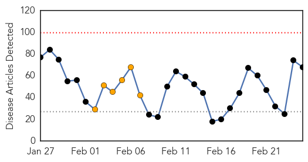
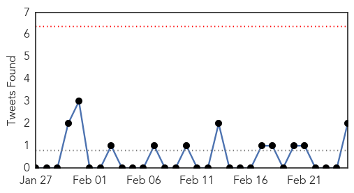
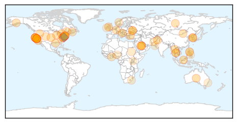
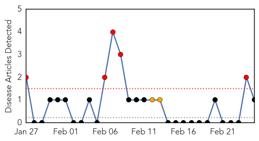
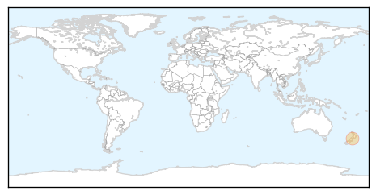

Unknown
30-Day Web Trend
0 alerts, 6 warnings

30-Day Twitter Trend
0 alerts, 0 warnings

Article Locations
Article Confidences
Top Articles:
- 0.997
- Deadly MERS Virus Circulates Among Arabian Camels : Shots
- 0.996
- Deadly MERS Virus Circulates Among Arabian Camels
- 0.952
- Mystery illness causing paralysis not widespread, doctors say
- 0.950
- Peel has highest rate of tuberculosis in Ontario
- 0.943
- Homeland Security News Wire
- 0.938
- Paralyzing "Polio-Like Virus" Suspected In Up To 25 California Children
- 0.921
- 5 things to know about California 'mystery disease'
- 0.917
- Chicago Tribune
- 0.917
- Chicago Tribune
- 0.917
- Chicago Tribune
- 0.917
- Chicago Tribune
- 0.917
- Chicago Tribune
- 0.917
- Chicago Tribune
- 0.917
- Chicago Tribune
- 0.917
- Chicago Tribune
- 0.917
- Chicago Tribune
- 0.912
- Unknown Polio-Like Illness Seen In California Kids
- 0.910
- The world windows to Thailand
- 0.910
- The world windows to Thailand
- 0.906
- Study reveals new ways deadly squirrelpox is transmitted to red squirrels
- 0.894
- Camels likely source of MERS virus in people: study
- 0.890
- Rare, polio-like virus striking Bay Area children
- 0.882
- Polio-Like Illness Appears In Several California Children, Including Berkeley Girl: SFist
- 0.881
- What you need to know about the polio-like illness afflicting kids in California
- 0.880
- PEDv Update from Manitoba, Ontario
- 0.866
- Police fire tear gas on anti-govt protesters in Istanbul
- 0.866
- Russian diplomat raises concern over safety of Russians in Ukraine
- 0.866
- Turkey's PM Erdogan says recordings 'treacherous attack'
- 0.866
- Ukraine's leader to hold talks on "dangerous signs of separatism"
- 0.866
- Don't force Ukraine to choose between Russia and West
- 0.866
- Goat plague outbreak confirmed in Inner Mongolia
- 0.843
- Polio-like illness baffles California doctors
- 0.828
- Polio-like disease appears in California children
- 0.811
- Rare polio-like illness could have affected up to 25 children
- 0.801
- Mysterious polio-like disease hits 25 children in California
- 0.799
- Officials Focus on Limiting Spread of PED Until Warmer Weather
- 0.770
- DOH chief: Don’t panic over ‘flesh-eating disease’
- 0.765
- Younger population more susceptible to recent flu
- 0.752
- Killer Cheese Recalled
- 0.751
- Polio-like illness seen in up to 25 California children
- 0.748
- N. Korea asks U.N. to help contain FMD
- 0.743
- Malaria vaccine testing positively in Ghanaian trial
- 0.731
- Polio-like illnesses called a ‘rare phenomenon’ - National
- 0.717
- Doctors baffled over mysterious illness paralyzing children in California
- 0.706
- N. Korea asks U.N. to help contain FMD
- 0.675
- Norovirus outbreaks on cruise ships continue
- 0.665
- Doctors in California warn of rare 'polio-like' virus
- 0.635
- California senator seeks review of paralysis cases - MyNorthwest
- 0.624
- Staff relocated as conflict worsens, South Sudan
- 0.623
- ‘Mysterious flesh-eating disease’ in Pangasinan a hoax–health exec
Showing top 50 articles...
Top Tweets:
- 0.657
- RT: Fascinating. @nytimes: Camels Linked to Spread of Deadly MERS Virus in People http://t.co/6cVKoxVnm0
- 0.641
- RT: Everyone 6 mo. & older should get vaccinated. This yr’s flu vaccine is well matched w/circulating flu viruses. http://t.…
- 0.539
- RT: Babies <6 mo are too young for a flu vax & are at high risk of flu complications. Your flu vax helps protect them. http:/…
- 0.514
- Check out the blog featuring CDC Flu Expert Dr. Mike Jhung, discussing the current flu season. http://t.co/rCP2qdEPeu
Pertussis
30-Day Web Trend
5 alerts, 2 warnings

30-Day Twitter Trend
0 alerts, 0 warnings

Article Locations
Article Confidences

Top Articles:
Top Tweets:
-
No tweets found for Feb 25, 2014